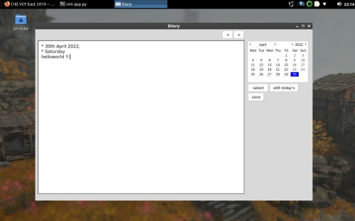
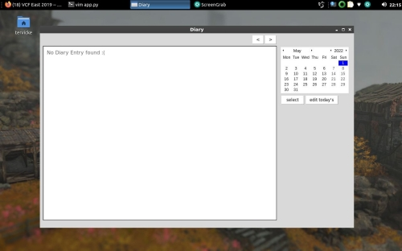

Coding a App to help me maintain a diary
Coding a App to help me maintain a diary
I dont know how many of you reading this like to write a diary , I really like writing a diary but everytime I decide to write one due to some reason or the other it doesnt workout and I stop writing . So as I have my vacations and I more or less free all the time I decided to write this small yet very useful app (for me) .
So a little bit prior information on how i used to write Diary before creating this app , i used to write diary in text files and store them in a place on my system more specifically at ~/diary . Writing the diary was fine I just used to create a text file and write but the problem when reading this files there are a like ton of files and usually while reading them i need to sort of them and then start reading and also there was not a proper framework for me to write and read the files .
Whenever I write GUI application's my goto language is java since i have used the java's swing and awt framework extensively but this time I decided to use python's GUI framework tkinter . comparatively if I say I think tkinter was easier + less lines of code .
You can check out the code here . The working of the code is very simple , it tries to read all the files in the current directory where thhe code is run and on the startup opens the diary of entry of today . you can write in this text pane and click ctrl+s to save it . as the text turns grey and the save button disappears you can use the left and right arrow key to move in the diary entry you can click the ctrl+e to edit today's entry again . Thats more or less you can do in the app it kind of follows the unix philosophy .


Some important things I learned while writing this app
- code Structuring , since I usually write c++ and java its really not optional for me to write structured code . but in python its more important to strucuture your code and not make gigantic mess
- There are more bugs when when you acually start using the app , I have been using this for around 3 days now and the more I use the app the more bugs I find , its only because I use this I dont think I would have had any idea if I wouldnt be using this app .